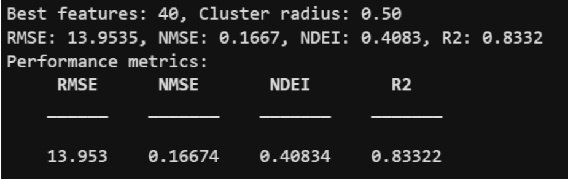
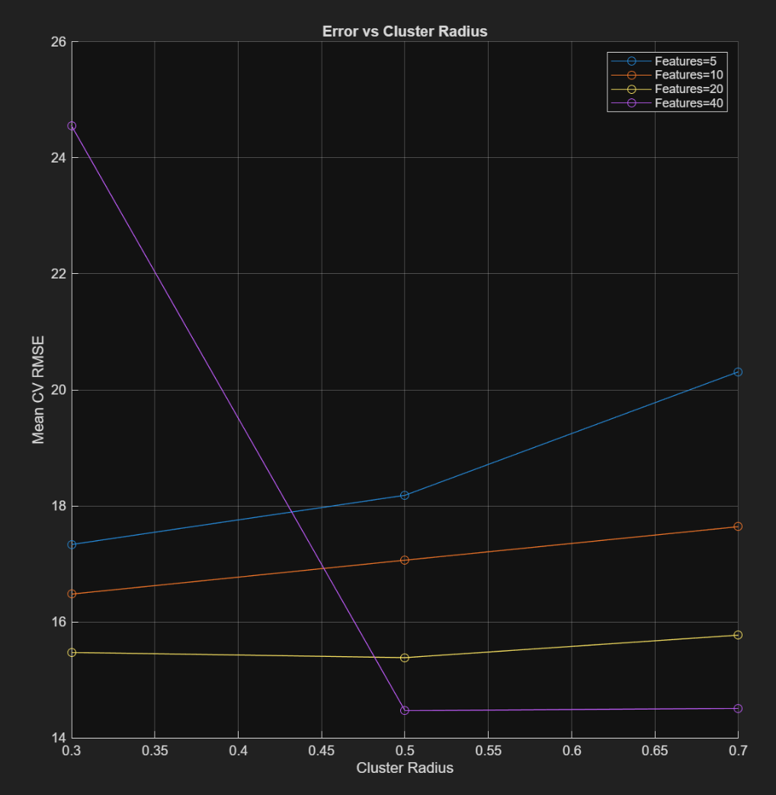
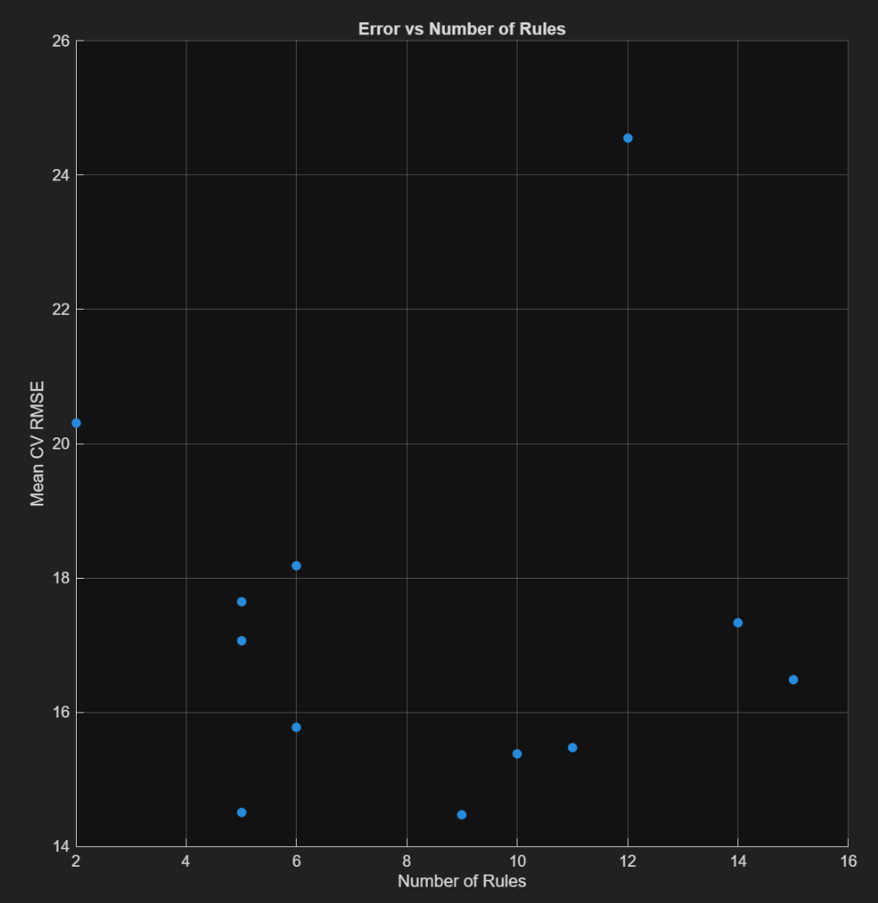
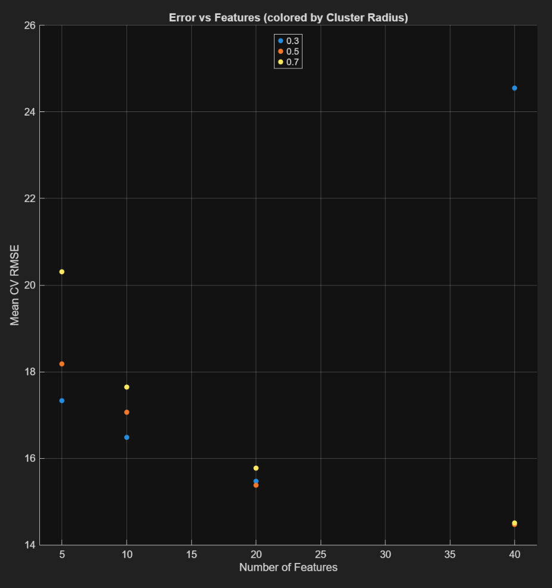
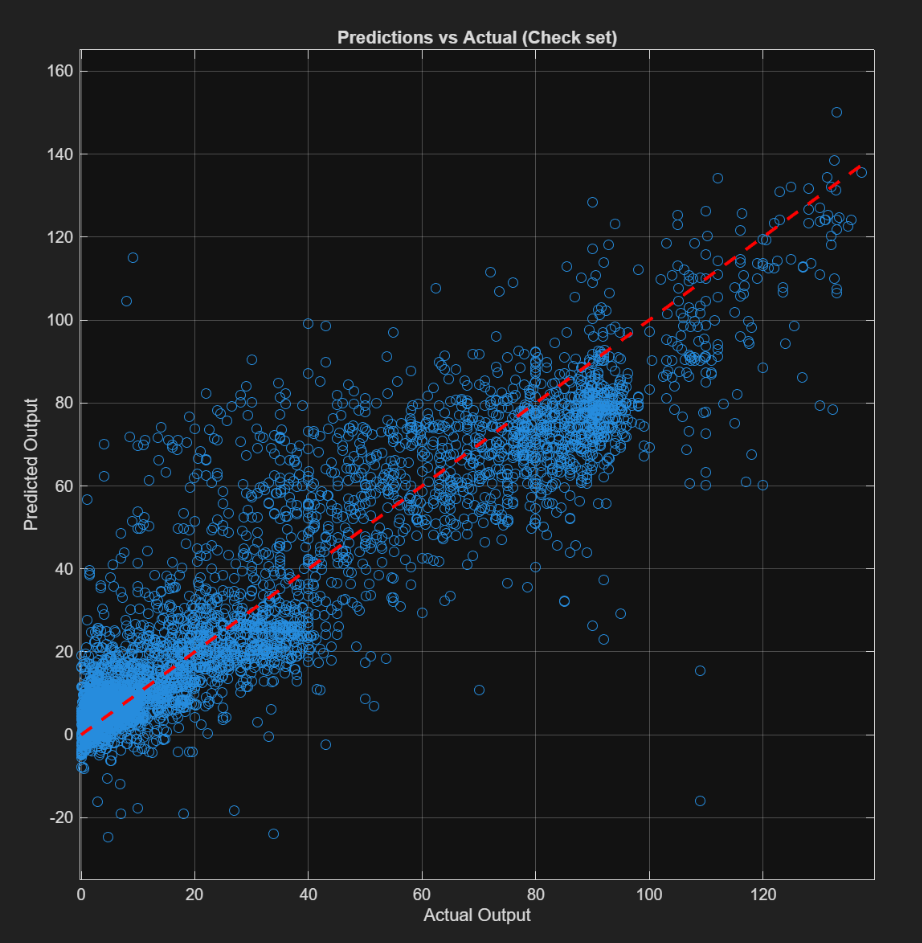
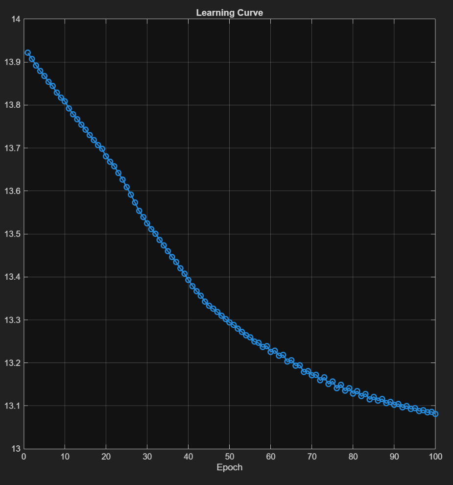
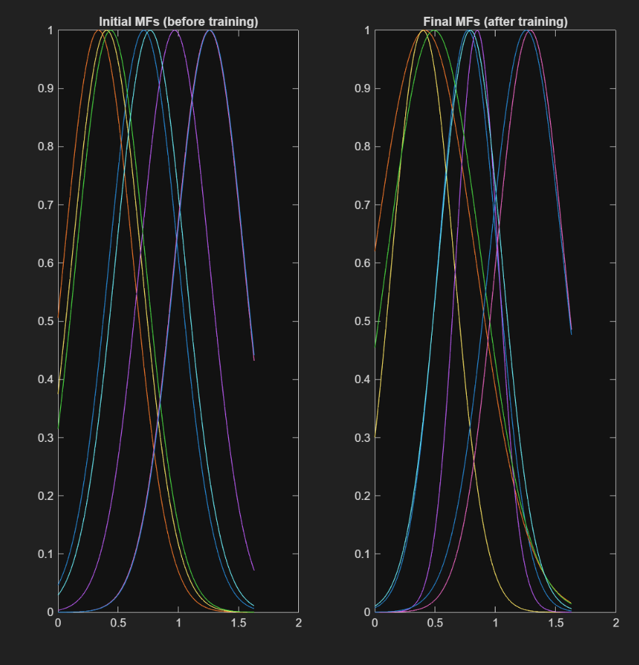

📊 Κλίμακα Αξιολόγησης Μετρικών
R² (Coefficient of Determination): R² ≥ 0.8 (άριστο) | 0.7-0.8 (πολύ καλό) | 0.5-0.7 (μέτριο) | 0-0.5 (κακό) | R² < 0 (χειρότερο από μέσο όρο)
RMSE: <5 (εξαιρετικό) | 5-8 (μέτριο) | ≥8 (κακό)
NMSE & NDEI: Κοντά στο 0 (άριστο) | >1 (πολύ κακό, πιθανό overfitting)
1ο Μέρος - Σύγκριση Μοντέλων
Εκπαίδευση και Αξιολόγηση
Για την εκπαίδευση των μοντέλων χρησιμοποιήθηκε το script regression_training.m και για την εκτέλεση το main1.m.
Αποτελέσματα Μοντέλων
| Μοντέλο | R² | RMSE | NDEI | Μοντέλο 1 | 0.401 | 5.11 | 0.599 | 0.774 |
|---|---|---|---|---|
| Μοντέλο 2 | -5.86 | 17.29 | 6.861 | 2.619 |
| Μοντέλο 3 | 0.719 | 3.50 | 0.281 | 0.530 |
| Μοντέλο 4 | -1094 | 218.44 | 1095.1 | 33.09 |
Ανάλυση Αποτελεσμάτων:
Μοντέλο 3 (R² = 0.719, RMSE = 3.50): Πολύ καλή απόδοση με R² που εξηγεί το 72% της διακύμανσης και RMSE μόλις 3.5 μονάδων. Το μοντέλο προσαρμόζεται ικανοποιητικά στα δεδομένα χωρίς έντονη υπερεκπαίδευση, όπως επιβεβαιώνουν και οι χαμηλοί δείκτες NMSE (0.281) και NDEI (0.530).

Μοντέλο 1 (R² = 0.401, RMSE = 5.11): Μέτρια προσαρμογή που εξηγεί μόνο το 40% της διακύμανσης. Το RMSE στο όριο του αποδεκτού (5.11) υποδηλώνει ότι το μοντέλο είναι υπερβολικά απλό και δεν αποδίδει επαρκώς την πολυπλοκότητα των δεδομένων.
Μοντέλο 2 (R² = -5.86, RMSE = 17.29): Το αρνητικό R² σημαίνει ότι το μοντέλο είναι χειρότερο από μια απλή πρόβλεψη με μέσο όρο. Το υψηλό RMSE και ο εκρηκτικός NMSE (6.861) αποκαλύπτουν αδυναμία γενίκευσης και υπερβολικές τοπικές αποκλίσεις.
Μοντέλο 4 (R² = -1094, RMSE = 218.44): Πλήρης αποτυχία με καταστροφικά αποτελέσματα. Η υπερβολική διαμέριση του χώρου εισόδου οδήγησε σε ακραία πολυπλοκότητα που καταρρέει κατά την πρόβλεψη, με NMSE > 1000 που επιβεβαιώνει έντονο overfitting.
Σχολιασμός Καμπυλών
- Καμπύλες μάθησης (Model 3): Το training error παραμένει χαμηλό και σταθερό, ενώ το validation error είναι ελαφρώς υψηλότερο και πιο ασταθές, χωρίς όμως τάσεις εκτροχιασμού → περιορισμένη αλλά ανεκτή υπερεκπαίδευση.
- True vs Predicted (Model 3): Οι προβλέψεις συγκεντρώνονται κοντά στη διαγώνιο, με καλή γραμμική συσχέτιση.
- Residuals (Model 3): Τα σφάλματα είναι κατανεμημένα γύρω από το μηδέν, χωρίς εμφανές μοτίβο, αν και παρατηρούνται ορισμένα outliers (>15).
Συμπέρασμα 1ου Μέρους
Από τα τέσσερα μοντέλα, μόνο το Μοντέλο 3 πέτυχε ικανοποιητική ισορροπία μεταξύ ακρίβειας και γενίκευσης, με R² = 0.719, RMSE = 3.50 και NDEI = 0.530. Τα υπόλοιπα μοντέλα είτε υποαπέδωσαν λόγω υπερβολικής απλότητας (Μοντέλο 1) είτε κατέρρευσαν από υπερεκπαίδευση (Μοντέλα 2, 4), καθιστώντας τα ακατάλληλα για πρακτική χρήση.
2ο Μέρος - TSK Fuzzy Model
Εκπαίδευση με Relief Feature Selection
Για την εκπαίδευση του TSK fuzzy μοντέλου χρησιμοποιήθηκε το script regressionB_training.m και για την εκτέλεση το main2.m. Η μεθοδολογία περιλαμβάνει επιλογή χαρακτηριστικών μέσω Relief και Subtractive Clustering.

Βελτιστοποίηση Παραμέτρων


Παρατηρήσεις Βελτιστοποίησης:
Στα 40 features παρατηρείται απότομη αύξηση του σφάλματος για radius = 0.3, ένδειξη overfitting από υπερβολικό αριθμό κανόνων. Αντίθετα, το radius = 0.5 με 40 χαρακτηριστικά δίνει τα χαμηλότερα validation errors, καθώς το μεγαλύτερο radius περιορίζει τους κανόνες και βελτιώνει τη γενίκευση.
Αποτελέσματα Τελικού Μοντέλου



Οι τελικές MFs δείχνουν πώς το μοντέλο κατανοεί τις διαφορετικές καταστάσεις του input μετά από training.
Συμπεράσματα 2ου Μέρους
Το τελικό TSK μοντέλο, εκπαιδευμένο με Relief feature selection και Subtractive Clustering (radius = 0.50, 40 features), παρουσιάζει εξαιρετικά αποτελέσματα με R² = 0.833 που εξηγεί πάνω από το 83% της διακύμανσης. Παρότι το RMSE = 13.95 φαίνεται υψηλό σε σύγκριση με το Μοντέλο 3 του 1ου μέρους, είναι αναμενόμενο λόγω του διαφορετικού εύρους τιμών του dataset.
Οι χαμηλοί κανονικοποιημένοι δείκτες (NMSE = 0.167, NDEI = 0.408) επιβεβαιώνουν την απουσία overfitting, παρά τον αριθμό των χαρακτηριστικών και κανόνων. Η μεθοδολογία Relief + Subtractive Clustering + ANFIS αποδεικνύεται αποτελεσματική, παρέχοντας αξιόπιστες προβλέψεις με ισχυρή ικανότητα γενίκευσης.